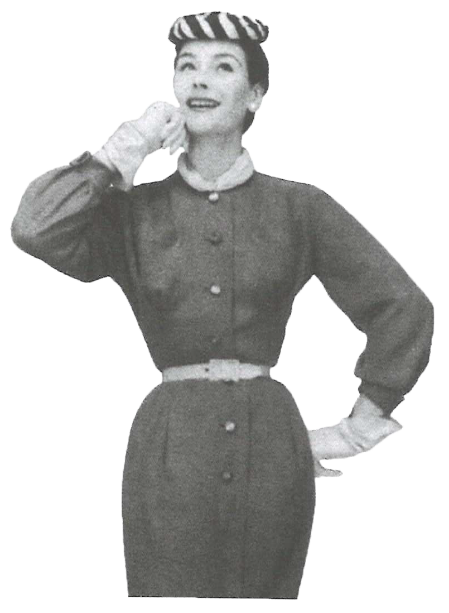
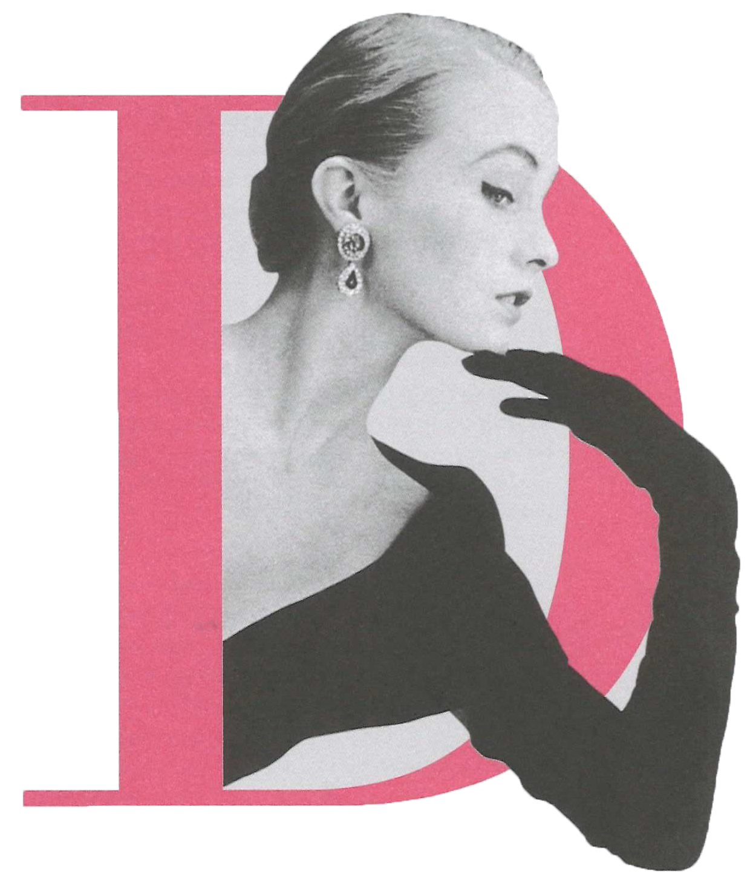

There are some women who look best in suits, but there are others who cannot wear suits, especially if they are very small or have short legs. For them, I advise the wool frock—the day frock. You can wear it every day, every month of your life, so choose a simple, classic style in a neutral color and ring the changes with carefully chosen accessories.

... Day Frock. A Dior day frock in a neutral "tobacco" shade. Very simple in line, it has a high, round neckline and loose comfortable sleeves.
